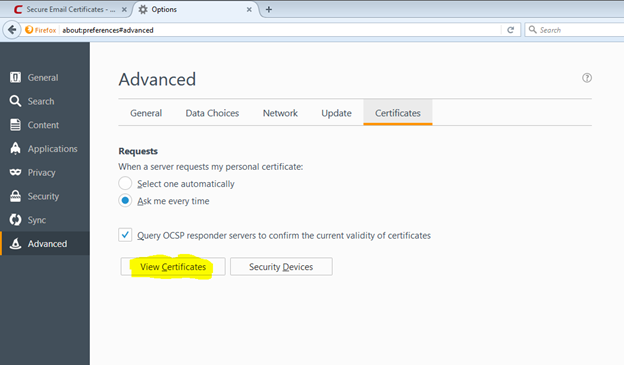
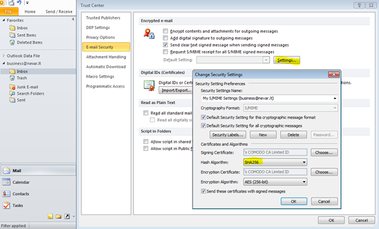

In this guide, the instructions are for Firefox, Windows 7 (but in general any Windows OS should do as long as you have Firefox) and Outlook 2010 (again, instructions should work with Outlook 2013/2016 but YMMV)
Fill in the details. The most important parts are the email address and the revocation certificate. You will then get the following screen:
Open your email and click on the link to confirm that you own the email address. You won’t get the certificate unless you can prove you manage the email.
You will then get the certificate installed in your browser (Firefox).
Navigate to Firefox properties toolbar and pick Advanced, then pick View Certificates.

Your email certificate will be installed under “Your Certificates”.
Click on “View” to see the certificate to verify.
Once you have verified that the subject matches your email, backup the certificate to disk (i.e. export to file)
You will be asked to password-protect the file, do it.
You will then get confirmation:
Next, the certificate needs to be imported in to Outlook. Open Outlook, go to Options and then Trust Centre and Trust Centre Settings.
Click “E-mail Security” and “Import/Export” and pick the file that you exported the certificate to. Also provide the password which you used when backing up (exporting) the file. Digital ID names should be your name or your email.
The following screen will follow, click OK.
Confirm that you want to install the certificate
Change from SHA1 to SHA2 (or SHA5) but don’t change anything else.

The certificate should now have been imported. Send a signed test email to confirm - see the screenshot below, under Options tick the “Sign” section, and send. Do not tick “Encrypt”..
Allow Outlook to access the key (it’s already imported but Outlook cannot use it unless you grant permission).
After the test email is sent, open your BB email to see if you’ve got mail. See below, it’s marked as signed, and there is a valid signature.
This email was manually signed by clicking the “Sign” icon. Instead this can be enabled to be applied by default, see the screenshot below:
Remember the revocation key that was specified on the Comodo website? That can be used to revoke the certificate if need be. The revocation link is in the original email from Comodo.


{kind=link}
{kind=link}
{kind=link}